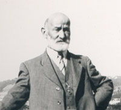

 |
Emil Gloor Emil Gloor was born in Switzerland. |
|
|
Important
Facts
|
||
| March 5, 1857 | Emil Ernest Gloor was born in Canton Aargau, Switzerland. Source: 1910 US Federal Census. |  Gloor Family |
| Married Lisette Sahli (1858-1946) in Switzerland. | ||
| January 28, 1884 | Emil Ernest Gloor was born in Bern, Switzerland. | |
| May 28, 1885 | Emma Zellie Gloor was born in Bern, Switzerland. Source: U.S., Passport Applications, 1795-1925. | |
| 29 May 1886 | Werner H. Gloor was born in Bern, Switzerland. Source: U.S., Social Security Death Index, 1935-2014. | |
| 11 Aug 1888 | Ernest Emil Gloor was born in Bern, Switzerland. | |
| April 12, 1897 | Margarate Gloor was born in Bern, Switzerland. | |
| 1906 | Emil, Lisette and the family imigrated to the US. Source: 1930 US Census. | |
| April 20, 1910 | Emil Gloor (54), Lisette (53), Emil E. (26 superintendent), Wirner (24 cook), Ernest (22 waiter), Margarate (13) listed as living on Henry Street in Berkeley, California. Oakland, Township, Alameda, CA. Source: 1910 US Census Series: T624, Roll: 72, Part: 2, Page: 43A. | |
| January 6, 1920 | Emil Gloor (62 watchmaker for Jewelry store), Lisette (62), Emil Gloor Jr. (36 Contractor for Masonry Co.), Margarate (22 clerk for railroad) listed as living Berkeley, Alameda, California. Source: 1920 US Census. Roll: T625_93, Page: 6B, ED: 194, Image: 420. | |
| April 2, 1930 | Emil (73), Lisette (72) listed as living in Berkeley, Alameda, California. Source: Roll: 111; Page: 1A; Enumeration District: 317; Image: 923.0. | |
| 1935 | Emil died in San Francisco, California. Source: California Death Index, 1940-1997. |